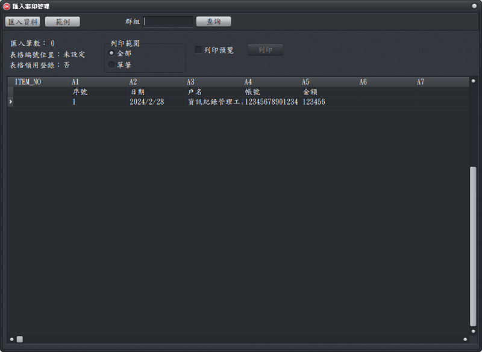
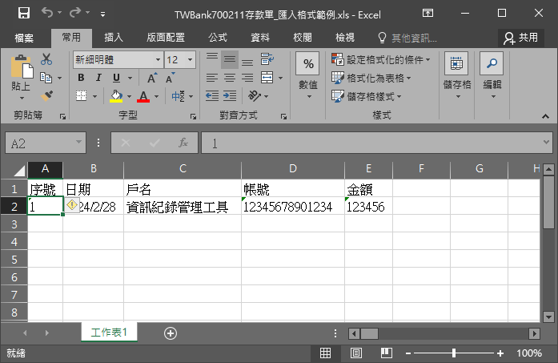

匯入套印
匯入套印是適用於整批、大量的套印方式，讓使用者匯入套印資料取代人工逐筆輸入，以節省人力及時間，並且降低錯誤，使用匯入套印時需注意下列事項：
- 文件設定檔：文件需完成測試，可以印出正確的文件。
- 列印筆數：匯入檔案筆數沒有限制，但需考量印表機紙張上限。
- 列印預覽：僅供使用者測試、檢視使用，正式套印可以直接列印以加快套印速度。
- 匯入資料：第一次使用請執行「範例」此功能會自動產生符合匯入套印的檔案格式，並將已列印過的記錄顯示當作輸入範例。

匯入套管理視窗

範例產生的檔案案